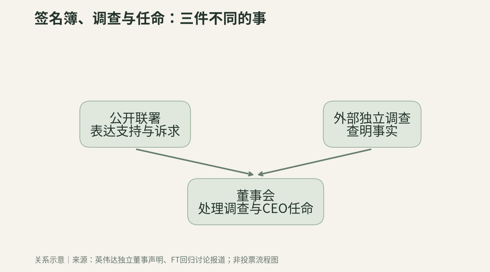
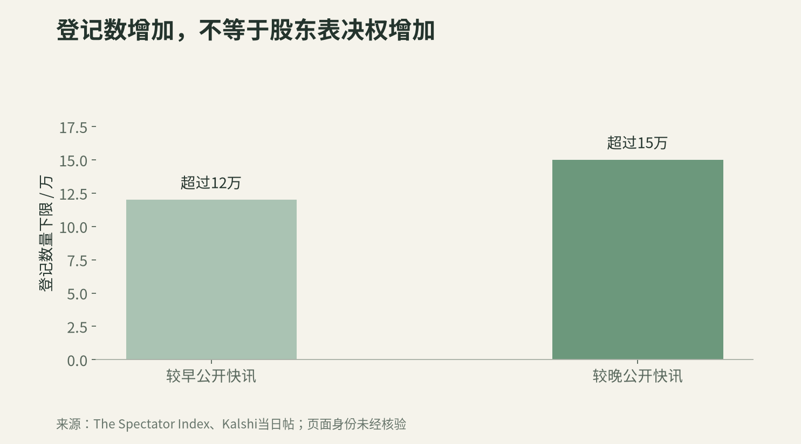

有人忙着签名，有人还在查账——黄仁勋回英伟达要过哪道门
《金融时报》称盟友在组「作战室」，公开联署超过15万；独立调查仍在进行，贝森特又要求从外部找CEO。签名簿、董事会和监管，管的是三件不同的事。
马斯克把名字签了上去。Epic Games的Tim Sweeney、前Uber CEO Travis Kalanick、YouTube联合创始人Steve Chen，也出现在支持黄仁勋的公开联署里。
联署叫「Stand With Jensen」。要求很直接：把他请回来。到周日，页面上的签名已经超过15万。
英伟达董事会手上的工作却没停。独立董事请来的外部律师仍要调查，接任CEO还要找。就在同一天，美国财长贝森特说，下一任应当从公司外面找。
黄仁勋已被报道与亲信讨论重返CEO的可能性。一位盟友说，他们正组织硅谷高管建立「作战室」，游说董事会，还想争取白宫支持。联署把支持者聚到了一起，调查和任命却各有自己的程序。
⚠️ 回归讨论与「作战室」的消息来自《金融时报》，尚无公司正式回归任命公告。
支持声量在增加，但能不能回来，仍要落到董事会如何处理调查、任命和公司接下来的经营。
先把几个词说清楚
董事会，是代表股东监督公司、决定高管任免的机构。CEO负责经营，董事会决定由谁来经营。
独立董事，是不在公司担任经营职务的董事。请外部律师调查，是把查明事实的工作交出去，并没有把任命CEO的决定也交给律师。
公开联署，就是人们把名字写在一份公开诉求下面。签了名，不等于拿到了董事会的一票，也不等于这是一场按持股数计算的股东表决。
预测市场，是参与者用钱买卖某件事会不会发生的合约。屏幕上的概率是当时的交易报价，不能当成董事会已经做出的决定。
名字越签越多，支持者在争取什么
公开联署里，有一条很容易被略过去：组织者要求董事会解释，黄仁勋是否在没有充分程序、没有足够机会陈述自己的情况下离开。
支持者也承认，33年的领导经历不让他免于问责。他们主张问责应当有证据、公平听取解释，再给出有理由的决定。联署的诉求包含「把他请回来」，也包含「把过程说清楚」。
所以这里至少有两种支持。一种相信黄仁勋仍是最适合领导公司的人；另一种未必已经判断所有指控，但认为董事会必须说明自己怎么做了决定。
这两种人都可能签名。把他们全算成同一个答案，会看错这份名单。
联署的身份很难核实。网站说明，签名者填写的股东、员工等身份是自行申报的，未经验证。
⚠️ 超过15万是公开联署显示的登记数量，不是经核验的15万名股东，更不能直接换算成多少表决权。
「作战室」要敲的是董事会的门
据报道，一位黄仁勋的盟友说，他们在组织硅谷高管游说英伟达董事会，并争取白宫支持。
这说明回归已经成为一项主动推进的诉求。可「正在讨论」和「已经获准」之间，还有任命这一步。
支持者能做的是把影响公司经营的人带进讨论：客户怎么看，员工愿不愿意留下，原有的供应链关系能否维持。黄仁勋长期积累的关系，是他们认为公司不能轻易放弃的东西。
董事会要处理的还有另一面。高管能带来业务，也可能带来合规和诉讼风险。客户的支持，可以说明客户愿不愿意继续合作；它回答不了所有行为是否符合公司的规定。
如果把这些都装进「他重要，所以该回来」这一句话，重要到什么程度、回来以后怎样管理风险，就没人回答了。
外部律师在查的事，不会被签名冲掉

英伟达独立董事11月10日的正式声明说，已聘请前纽约南区代理联邦检察官Joon H. Kim及Wachtell律所，进行全面、独立的调查。
这是公司已经公开确认的动作。比起联署页面每小时涨了多少名，这份声明更能说明董事会目前承担的责任。
外部调查的意义，在于先把事实查清楚。调查得出什么结果、董事会如何据此安排管理层，才会改变公司承担的风险。支持者是否喜欢黄仁勋，与这些问题可以同时存在。
报道中，连一位支持黄仁勋的盟友都承认，与下属发生关系可以构成解雇理由。支持回归的人内部，也没有对行为边界完全达成一致。
把联署理解成「所有问题已经澄清」，会跳过最关键的一步。
算一笔账：多了三万签名，究竟多了什么

第一步，看两个快照。The Spectator Index较早报道，签名超过12万；Kalshi后来报道，超过15万。这里比较的是两个公开快讯中的下限。
第二步，拿下限作一个粗算。15万减12万，是3万；3万除以12万，是25%。这只表示两个报道门槛之间相差四分之一，不是精确的实际增长率。
第三步，看看分母换成什么会出错。3万新增登记，不能写成「新增3万名股东支持」，因为登记身份没有验证。也不能写成「支持率提高25%」，因为没有统计所有股东或所有员工。
第四步，换到真正要做的决定上。无论登记15万还是更多，都没有给出持股数、投票权以及董事会表决结果。签名变多，说明动员有进展；它没有自动跨过任命CEO的那道门。
这笔账里没有出现的数，同样重要：有多少经过确认的股东、持有多少表决权、董事会怎样回应。这几项和网页上的人数不是一回事。
贝森特在问另一张账
贝森特周日在Fox News的节目里，要求英伟达说明对华销售是否被用来抬高收入和利润，并主张领导层进行「彻底改组」、从公司外部找CEO。
他要求董事会和外部律师在接下来10天给出答案。这是财长的公开要求，不是调查结论，也不是新任CEO已经确定。
支持者在讨论谁有能力维持英伟达的经营；贝森特把问题指向过去的销售和合规；董事会要同时处理两件事。
英伟达周二还要发财报。这是黄仁勋离开、财务长Colette Kress担任临时CEO后，公司首次重要的公开沟通机会。管理层能否说清客户、交付和后续安排，比某一个回归传闻又被转发多少次更影响经营判断。
Dan Ives与阿克曼，分歧在于如何替代黄仁勋
Dan Ives承认没人能完全复制黄仁勋，但认为风波后的形象已无法恢复，回归的想法不现实。阿克曼则被Kalshi引述为：没有黄仁勋，英伟达也会做得很好。
另一边，Pompliano把可能的回归同奥特曼当年的经历相比，认为这会改变创始人与董事会的权力关系。这是他的个人判断。
截至窗口结束前，Kalshi又发快讯，把回归盘口写成12%，早些时候是9%。这些百分比对应发帖时的市场报价。它们能够反映交易者态度变化，替代不了公司公告。
把这些观点分开看，分歧就清楚了：有人在押一个人的影响力，有人在问换了人公司能否照常运转，还有人在讨论董事会到底管不管得住创始人。
这对持有英伟达的人意味着什么
联署是支持者的名单，任命要看董事会的决定。 两份材料值得一起读，不能拿前者替代后者。
回归若能稳定客户和员工，是经营上的机会；调查未结束、管理层安排悬而未决，则会继续给经营和估值带来不确定性。无论个人多么看好黄仁勋，都得把这两部分分开算。
真正会改变判断的，是董事会正式回应、独立调查的进展，以及周二公司能否讲清之后怎样经营。如果只剩联署数字往上跳，任命和合规问题仍旧原地不动。
几点说明
12万、15万是不同时间快讯里的登记数量下限，3万和25%按这两个门槛计算，不是实际人数的精确增幅。9%、12%是Kalshi不同发帖时点的回归报价。对回归可能性和公司治理变化的判断均为作者或公开发言者的观点；本文不对尚在调查的个人行为和销售指控作结论。
免责声明：本文仅供信息参考，不构成投资建议。
X 上怎么看
结论 · 他在和盟友讨论回来、外界声量很大，这是已经见报的事实；但董事会调查还没结束，财长公开主张空降，预测市场给出的回归盘口仍然偏低。声援人数和能不能回去， 不是一回事。
▲ 看多5 位
● 分歧或中性6 位
观点为 X 用户当日公开帖子的中文摘要，忠于原文但有删减；标「未核实」的为预测、个人推测或单一来源说法。立场为人工判断。
数据来源
- 回归讨论及作战室为FT消息，路透、Fox Business等转述不算独立证实；尚无正式回归任命。
- 登记数是公开联署未经验证的身份自报，12万、15万是不同时间报道下限，不是股东人数或表决权。
- 独立调查由公司正式声明确认；贝森特对销售的质疑是公开发言，不是已证实的违法结论。
- Kalshi 9%、12%是两则快讯中的时点报价；不把周日市值上涨快讯当纳斯达克正式成交。
- https://nvidianews.nvidia.com/news/statement-from-the-independent-members-of-the-nvidia-board
- https://www.investing.com/news/stock-market-news/jensen-huang-discusses-comeback-as-nvidia-ceo-with-allies-ft-reports-5028065
- https://www.foxbusiness.com/technology/jensen-huang-weighs-nvidia-ceo-comeback-ally-plans-war-room-report
- https://www.theverge.com/tech/1033999/jensen-huang-return-nvidia-megaspeed
- https://www.axios.com/2026/11/15/bessent-nvidia-earnings-china-chip-sales-ceo
- https://x.com/spectatorindex/status/2121748192798913003
- https://x.com/Kalshi/status/2122028180441588141
- https://x.com/Kalshi/status/2122107097164698014
- https://x.com/DivesTech/status/2121996130313437512
- https://x.com/Kalshi/status/2121765374366523691
- https://x.com/APompliano/status/2122050488313000042